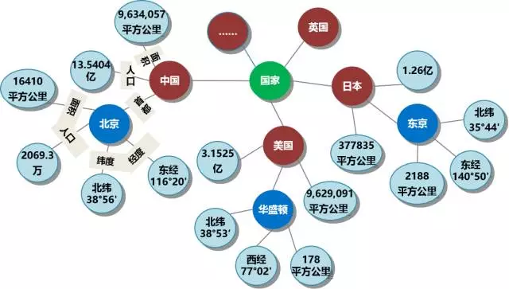
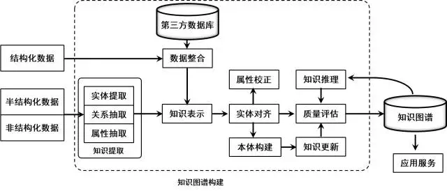

1 基本概念：
https://mp.weixin.qq.com/s/bhk6iZdphif74HJlyUZOBQ
知识图谱中包含三种节点：
实体: 指的是具有可区别性且独立存在的某种事物。如某一个人、某一个城市、某一种植物等、某一种商品等等。世界万物有具体事物组成，此指实体。如图1的“中国”、“美国”、“日本”等。，实体是知识图谱中的最基本元素，不同的实体间存在不同的关系。 语义类（概念）：具有同种特性的实体构成的集合，如国家、民族、书籍、电脑等。 概念主要指集合、类别、对象类型、事物的种类，例如人物、地理等。 内容: 通常作为实体和语义类的名字、描述、解释等，可以由文本、图像、音视频等来表达。 属性(值): 从一个实体指向它的属性值。不同的属性类型对应于不同类型属性的边。属性值主要指对象指定属性的值。如图1所示的“面积”、“人口”、“首都”是几种不同的属性。属性值主要指对象指定属性的值，例如960万平方公里等。 关系: 形式化为一个函数，它把kk个点映射到一个布尔值。在知识图谱上，关系则是一个把kk个图节点(实体、语义类、属性值)映射到布尔值的函数。 基于上述定义。基于三元组是知识图谱的一种通用表示方式，即
是知识库中的实体集合，共包含|E|种不同实体；
是知识库中的关系集合，共包含|R|种不同关系；
代表知识库中的三元组集合

1.1 知识图谱的逻辑结构
知识图谱在逻辑上可分为模式层与数据层两个层次，数据层主要是由一系列的事实组成，而知识将以事实为单位进行存储。如果用(实体1，关系，实体2)、(实体、属性，属性值)这样的三元组来表达事实，可选择图数据库作为存储介质，例如开源的Neo4j[7]、Twitter的FlockDB[8]、sones的GraphDB[9]等。模式层构建在数据层之上，是知识图谱的核心，通常采用本体库来管理知识图谱的模式层。本体是结构化知识库的概念模板，通过本体库而形成的知识库不仅层次结构较强，并且冗余程度较小。
1.2 知识图谱的体系架构

2 知识图谱的构建过程设计的关键技术
http://blog.csdn.net/zhangqiang1104/article/details/50212227
2.1概念和实体学习
正如Google的辛格博士在介绍知识图谱时提到的：“The world is not made of strings , but is madeof things.”，这里的“thing”是和传统的互联网上的网页相比较的，知识图谱的目标在于描述真实世界中存在的各种实体和概念，以及这些实体、概念之间的关联关系。知识图谱可以看成是一张巨大的图，图中的节点表示实体或概念，而图中的边则由关系构成。
http://blog.csdn.net/zhangqiang1104/article/details/50212261
数据源：
内部：
mysql，
外部：
专业领域：点评，天猫等
爬虫es获取
通用领域：
开放链接数据和开放知识库严格而言属于半结构化的数据，这些数据通常以图形式的数据结构存储。最知名的为YAGO[14]、DBPedia[15]和Freebase[16]，中文通用概念知识图谱（CN-Probase）
在线百科：百度百科，互动百科
2.2实体对齐（同义关系学习）
关于知识图谱的实体（概念）对齐的目标是，先把从三类百科中学习到的实体（概念）中描述同一目标的进行合并，再把经过合并后的结果实体集与从开放链接数据中抽取的实体进行合并。
2.2.1基于百科结构化数据的百科实体对齐
2.2.2基于的自监督百科实体对齐方法
自动生成训练语料
支持向量机的由Christopher J.C. Burges于1998年提出，基本目标是把一堆n维空间里的点用n-1维的曲面分开来
在现实应用的数据中，可能不存在线性可分的边界，此时可以通过数学方法将它从低维空间转化为高维空间，然后它就变得存在线性可分的边界了。这个投影过程采取了一种叫核的技术，转换过程中使用的函数叫做核函数，常见的核函数有线性核函数、多项式核函数、径向基核函数和Sigmoid核函数等。
语料构建完毕后，接下来便可以训练模型了。本文使用的实现是libSVM，它是一个简单易用的软件包，可以解决分类问题、回归问题和分布估计问题等，并且可以有效地多类问题
2.2.3基于语言学模式的方法
2.2.4基于CRF的开放同义关系学习
序列化标注问题指为一个观察序列中的每个组成单元赋予类别标签，其输入X是一个观测序列，输出Y是一些需要依据观测序列来推导的隐式状态；所有的输出yi形成一条链，每个y(i-1)至少和yi之间有一条边相连，这也保证了它们是遵守一阶马尔可夫假设的。
中文翻译为条件随机场或条件随机域，是一种机器学习模型。算法的过程，主要包括五步：选取作为同义关系的候选实体，标注机器学习所需要的语料，确定需要训练模型需要使用的特征，训练同义关系抽取模型，以及把学习的模型用于更丰富的句子中以抽取同义实体。本文把从文本句子中抽取同义实体建模成序列化标注问题，并使用CRF作为机器学习模型。
2.3 上下位关系学习
2.3.1 从开放链接数据集中抽取上下位关系
2.3.2 从百科中抽取上下位关系
百科中描述了两种上下位关系，一种是类别之间，另一种是类别和文章之间，前者对应概念间的层次关系，后者对应实体和概念之间的从属关系。
2.3.3基于开放上下位关系学习方法
基于CRF的开放上下位关系学习与基于CRF的开放同义关系学习非常相似
2.3.4分类树整合
2.4 属性学习
3 知识的应用
3.1 语义检索
语义检索分为三个过程：
（1）通过分词和实体识别从输入中识别概念、实体和属性；
（2）结合知识图谱的数据模式，对识别的结果进行理解；
（3）把理解的结果在目标数据集上进行搜索并返回结果；